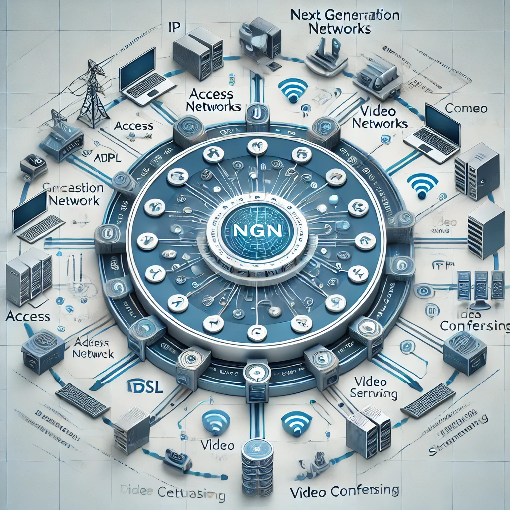

¿Qué son las Redes NGN?
Las Redes de Nueva Generación (NGN) son un concepto revolucionario en telecomunicaciones que integra servicios como voz, datos y video en una única infraestructura.

Aplicaciones Concretas de NGN
Las Redes de Nueva Generación (NGN) se aplican en diversos sectores, transformando las telecomunicaciones de manera significativa. Algunos ejemplos específicos son:
- Telefonía IP (VoIP): Empresas como Skype y Zoom utilizan NGN para ofrecer servicios de llamadas y videoconferencias con alta calidad y baja latencia.
- Streaming de Video: Plataformas como Netflix y YouTube aprovechan las NGN para transmitir contenido en alta definición sin interrupciones.
- Telemedicina: Instituciones médicas utilizan NGN para consultas remotas, permitiendo la transmisión de datos médicos en tiempo real.
- Smart Cities: Ciudades como Singapur emplean NGN para gestionar sistemas inteligentes de tráfico, iluminación y vigilancia.
- Redes Empresariales: Empresas globales como Cisco y Huawei implementan NGN para conectar sucursales y optimizar sus comunicaciones internas.
Beneficios
Algunos de los beneficios clave son:
- Mayor eficiencia y velocidad en las transmisiones.
- Reducción de costos operativos.
- Flexibilidad en la integración de servicios.

Demostración en Video
Características Técnicas
Las NGN representan un avance tecnológico con capacidades avanzadas, diseñadas para soportar múltiples servicios integrados.
Redes Definidas por Software
Permiten una gestión flexible y centralizada de la red.
Interoperabilidad
Capacidad para integrar múltiples servicios y tecnologías.
Calidad de Servicio (QoS)
Garantiza la entrega de datos según las necesidades del usuario.
Red Core IP
Proporciona una arquitectura central basada en IP para gestionar múltiples servicios de manera eficiente.
Redes de Acceso
Incluyen tecnologías como ADSL y FTTH, garantizando conexión de alta velocidad.
Calidad de Servicio (QoS)
Permite la priorización del tráfico para ofrecer un rendimiento óptimo según el servicio.
Arquitectura de NGN
Grafica de comparraciones
Conclusión
Las Redes de Nueva Generación (NGN) representan un cambio significativo en las telecomunicaciones, integrando voz, datos y video en una sola infraestructura. Su implementación mejora la eficiencia, reduce costos operativos y asegura la escalabilidad a largo plazo. Gracias a estas redes, sectores como la telemedicina, el streaming y las ciudades inteligentes han logrado innovar en sus servicios, marcando el camino hacia un futuro más conectado y flexible.
Las NGN no solo resuelven los problemas de las redes tradicionales, sino que también preparan el camino para la adopción de tecnologías emergentes como IoT y 5G, consolidando su lugar como la base de la próxima revolución tecnológica.